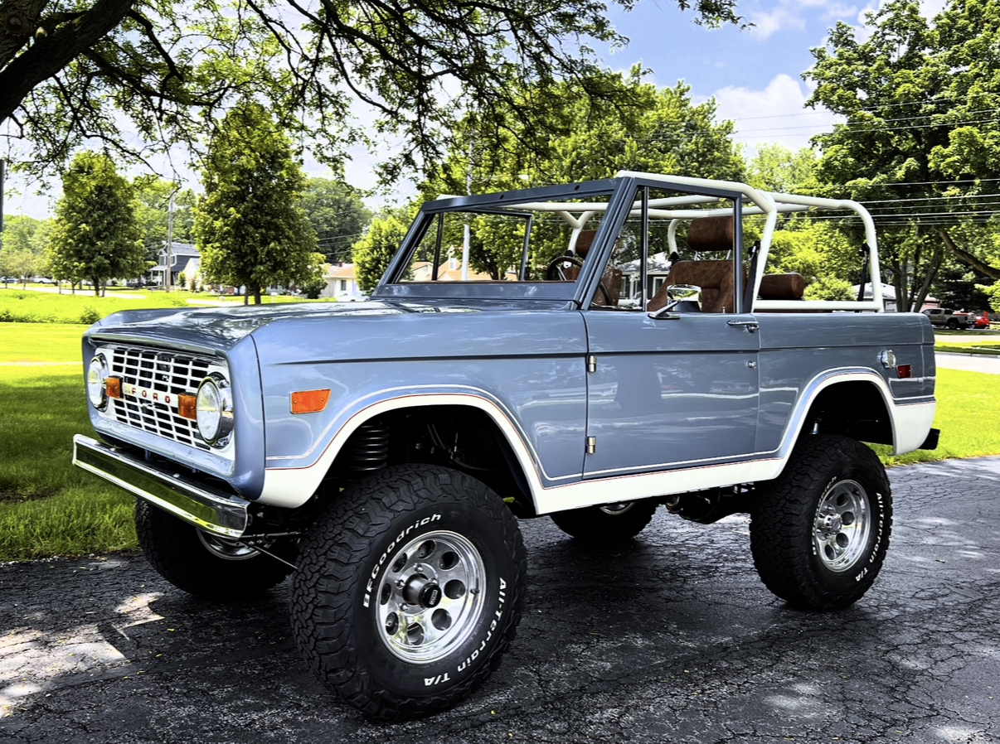

1968 Ford Bronco — 289 CID
Baseline restoration with period-correct power, refreshed drivetrain, and safety upgrades.
Browse a sampling of automotive restorations, CAD studies, and computer & electrical projects. Each entry links to a richer gallery or interactive viewer.
Engine swaps, chassis refurbishments, and tailored details. Image galleries open in a horizontal lightbox.
Baseline restoration with period-correct power, refreshed drivetrain, and safety upgrades.
Modernized restomod featuring a late-model Coyote swap, new wiring, and instrumentation.
Frame-off rebuild focused on off-road reliability, cooling, and clean packaging.

Street-tuned coupe with aero tweaks, suspension refresh, and track-ready instrumentation.
Interactive viewers let you orbit, zoom, and inspect detailed models. Upload GLB/GLTF assets to replace the placeholders.
Orbit the in-progress horn assembly concept directly within the carousel.
Explore the multi-part jaw assembly, screw drive, and mounting hardware ready for machining.
View suspension pickup points, battery placement, and aero details for a performance RC platform.
Inspect the split pattern and draft considerations for a cast aluminum cow bell concept.
Follow the linkage-driven head that embosses beverage cans with a custom brand mark.
Rotate through interchangeable bins and covers tailored for workshop fasteners.
Embedded builds, audio-reactive lighting, and smart home integrations. Galleries highlight wiring discipline and final behavior.

Classic timing IC driving alternating beacons with adjustable pulse widths.
Voice-enabled display with embedded LEDs, microphone array, and responsive UI.
FFT-driven light bar that maps audio frequencies to cascading color bands.